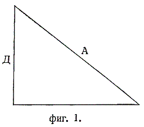

Беседа 1751 от 3877 · Беинса Дуно
Сенки на Битието / Сянка на нещата
– Само светлият път на мъдростта води към истината.
– В истината е скрит животът.
Четоха се работите върху темата: „Произход на митологията.“
Под „митология“ се разбира останки на предпотопни същества, изразени чрез новия език на хората. Това е азбуката, чрез която се тълкуват нещата. Защо египтяните са нарекли един от своите богове Озирис, гърците – Зевс, а римляните – Юпитер? Това се дължи на вътрешни причини. С какво се занимава аритметиката? – С числата и действията с тях. – Алгебрата? – Тя е разширена аритметика. – Нисшата математика? – Тя е още по-разширена. Значи, и в науката има растене, както и в органическия живот.
Сега, като дойдем до поетите, виждаме, че те разглеждат митологията по друг начин. Там, във вид на митове, изнасят живота на боговете. Съществуват ли днес тия богове? И до днес има картини, рисувани от различни художници, но де са художниците? – Заминали са някъде. – Де са старите гръцки скулптори? Творенията им съществуват и до днес, но скулпторите ги няма. Важно е, дали съзнанието на скулпторите е свързано с техните творения. Ако един виден поет напусне земята, ще се интересува ли той от своите кости? – Не се интересува. Обаче, близките и почитателите на поета се интересуват от неговите кости. Френолозите се интересуват специално от черепа на човека, особено на някой виден поет, учен или философ, заминал преди векове.
И тъй, митологията е знание на миналото, преведено в алегорична форма. Обаче, сегашната митология е още разхвърляна, не е приведена в строга, научна форма. От гледището на сегашния живот, миналото трябва да се свърже с настоящето, а настоящето с бъдещето. Какво ще кажете за правата линия? Коя е причината за създаването на правата линия, на точката, като център или средоточие? Дето се явява известна дейност, там хората съсредоточават вниманието си като в център. Посоката, в която точката се развива, образува права линия. Същото става със семката. Като се посади в земята, тя се стреми да се прояви. Това не става изведнъж. Постепенно тя пробива земята и поема посока нагоре, по права линия. Обаче, средата, в която семето се проявява, не е много благоприятна, поради което правата линия се огъва. Значи, препятствията, които среща тя на пътя си, я огъват. Като наблюдавате старите дървета, виждате, че едни от тях са прави, а други – изкривени. Повечето са изкривени. Има нещо красиво в това, но важно е, коя е причината за тяхното изкривяване. Неблагоприятните условия в природата са причина за изкривяване на стъблата и клоните на дърветата. Криви линии, т. е. изкривяване става и в човешкия организъм. Всяка кривина създава известна дисхармония в характера на човека.
Какво определение дава геометрията за кръга и за триъгълника? – Кръгът е хармонична линия, без никакво противоречие. Изобщо, геометричните форми не са нищо друго, освен език на природата. Когато кръгът изгуби своята хармонична форма, казваме, че и силите, които действат в него, претърпяват известна промяна. Когато яйцето се излюпи, и то губи своята форма. Това е неизбежен закон. Казвате: Моите възгледи са установени, като правата линия, като триъгълника и като кръга. Какво ще стане с вас, ако тия форми се изменят? Трябва ли да се чувствате нещастни? Има ли нещо лошо в това, че възгледите ви се изменили? Докато разполага с парите си, богатият е щастлив – има нещо установено във възгледите му; щом изгуби богатството си, възгледите му се изменят. Докато магарето му носи богатството, богатият е доволен и щастлив; щом магарето престане да носи богатството му на гърба си, богатият става недоволен. В тоя случай, магарето се радва, а богатият скърби. Това са символи, математически формули и числа, които трябва да се преведат.
Питам: Кое свързва богатия с магарето? – Богатството, т. е. неговият товар. Значи, богатият не може сам да пренесе богатството си от едно място на друго. – Кой е богатият: който носи богатството, или на когото принадлежи то? Магарето носи богатството, без да е богато. Богатият не носи богатството си, въпреки това, е богат. Ще кажете, че магарето е глупаво, а човек умен. – Как е възможно глупавото да е по-силно, а умното – по-слабо? – Това е така, защото човек е по-умен и не иска да носи товар. – Това е криво тълкуване. Между човека и магарето има известно отношение, т. е. съдружие. Това е теория, а не самата истина. Ако си в истината, ти ще се ползваш, ще тълкуваш нещата правилно. Ако е въпрос за фактите, ти можеш да тълкуваш един факт, както искаш; обаче, не всякога тълкуването е истинско. Можеш да вземеш един тон, както искаш, без да бъде той музикален. Коя е причината за това?

Кой от вас може да каже, как се изчислява бързината на светлината? По колко начина става това? – По три начина. Ако един светлинен лъч падне в окото на човека по прана линия, може ли да бъде видим? – За да се види, лъчът трябва да претърпи поне едно микроскопическо пречупване. Лъчът, който се вижда, е сянка на самия лъч. Лъч, който не хвърля сянка, е невидим. Мисъл, която не дава сянка, е неразбрана. Чувство, което не хвърля сянка, остава непознато. Така ще дойдем до въпроса, какво представя страданието. – То е необходима сянка за разбиране на радостта. Ако не съществуваше сянка, лъчът щеше да минава и заминава, без да се използва. За човешкото съзнание той щеше да бъде непознат, т. е. недостъпен.
Значи, каквато и да е светлината, тя трябва да има сянка. Щом лъчът се пречупва, явяват се известни цветове. Според физиците, пречупването на лъча подразбира разлагането му на цветове. – Какво представят цветовете? – Елементи на светлината. – На колко цвята се разлага бялата светлина? – На седем цвята, които, съединени в едно, дават пак белия цвят. – Възможно ли е това? – Бялата светлина прилича ли на цветовете? – Не прилича. Щом е така, цветовете не са елементи на светлината, но нейни сенки. Това твърдение да си остане за вас. Много естествено, ако съедините два елемента, това, което получите, трябва да прилича на тях. Ако съедините водород и кислород, ще получите вода; тя не прилича на съставните си елементи. Всъщност, водата трябва да прилича на водорода и кислорода, от които е получена. Щом е така, излиза, че водородът и кислородът са само проводници на водата, а не нейни съставни елементи. Истинските учени казват, че водата е съставена от други елементи, които се крият зад водорода и кислорода. Значи, за простите хора те казват едно, а за учените – друго. Простите хора знаят, че водата е съставена от водород и кислород. Обаче, истинските учени знаят самата истина. Иначе, не може да се обясни, как едни елементи дават съединения, които не приличат на тях. – На кого прилича детето? – На майка си и на баща си. Колкото и да не прилича на двамата, ще прилича поне на единия от тях. Ако не прилича на майка си, ще прилича на баща си; ако не прилича на баща си, ще прилича на майка си.
Важният въпрос за вас е да се научите да мислите правилно. Много пъти ще се питате защо сте нещастни, но, докато не мислите право, не можете да си отговорите право. Искате да бъдете щастливи. – Трябва да се научите да мислите право. – От какво зависи щастието? – Майка на щастието е добродетелта. Баща на щастието е разумността. Дето доброто отсъства, там няма щастие; дето няма разумност, няма щастие. Дето няма добродетел и разумност, там има нещастие. Майка на нещастието е грехът. Това е Агар, слугинята, която роди Исмаил. Какво се разбира под „слуга“? – Защо слугува човек? Питам: Защо човек пие вода? – За да утоли жаждата си. Ако нямаше жажда, той не би пил вода. – Защо яде човек? – За да утоли глада си. Ако не гладуваше, никога не би ял. – Защо гледа човек? – За да възприема светлината. – Защо му е светлината? – За да вижда нещата ясно. Ако нямаше желание да вижда, нямаше да се стреми към светлината. Щом влезе някъде, светлината става господар, а човек – слуга. Докато светлината не влезе в твоя дом, ти седиш на едно място и почиваш; щом влезе в къщата – ти, ставаш на крак и започваш да се движиш навсякъде.
Сега, аз не изнасям никакви противоречия, но говоря за неразбирането между хората. То създава голям хаос във философията и науката, в търсене смисъла на живота. И досега учените се питат, съществува ли задгробен живот, има ли душа и дух. Това са сериозни научни въпроси. И досега се питате, имат ли душата и духът сенки? – Имат, разбира се. Сянка на духа е умът, а на душата – сърцето. Сянка на ума са мислите, а на сърцето – чувствата. Ето защо, като говорим за физическия свят, трябва да имаме предвид сенките. Без сенки животът не може да се обясни. Щом имате сенки, ще дойдете до истината на физическия свят. Влезе ли в ума ви известно противоречие, веднага ще го снемете на физическия свят. – Защо страдам? – За да не се натъкнеш на по-голямо зло. Страданието е най-малкото зло в света. Следователно, от две злини ще избереш по-малката. Щом сте на физическото поле, какъвто живот и да се прояви, не може без страдания. Ако някой поддържа обратното, нека покаже живот без страдания. Птичката глътне една муха и казва: Така е рекъл Бог. Соколът сграбчи птицата и казва: Така е наредил Бог. Човек хваща птицата и нарежда: Така е определил Бог. Дойде друг човек, хване първия и казва: Това е Божията воля! Така, живите същества се изяждат едни-други.
Закон е: Умният гълта глупавия. Любовта гълта безлюбието. Радостта гълта страданието. Ако нямаше страдание, радостта щеше да умре гладна. Трябва да има страдание, за да го гълта радостта. За да живее радостта ви, непременно трябва да има страдание, от което тя да се храни. Като разсъждавате така, вие ставате силни, укрепвате се. Казвате: Светът не е създаден, както трябва. – Защо? – Или светът не е разумен, или вие не го обяснявате разумно. Ако, наистина, светът не е разумен, в него има някакво противоречие. Ще излезе, че вие сте по-разумни от него. Създайте тогава един разумен свят, какъвто вие искате. – Нещастен е моят живот. – Ако си убеден в това, сам си създай щастлив живот.
Казвам: Който съзнава, че страда, той може и да се радва; който съзнава, че е беден, той може да бъде и богат. Нещастен е оня, който съзнава, че е беден; щастлив е оня, който съзнава, че е богат. Щом съзнаваш, че си богат, това е богатство; щом съзнаваш, че си беден, и това е богатство. Ако съзнаваш, че не си учен, можеш да бъдеш учен; ако съзнаваш, че не си добър, можеш да бъдеш добър. Който мисли, че е добър, той е разрешил въпроса на своето време. Който съзнава, че е грешен, той още не е разрешил този въпрос. Какво му струва да го разреши? В това отношение, грешният прилича на ония млади моми, които отишли при свещеника да се изповядат. Той бил малко разположен от винцето, което пил, затова казал на момите: Елате при мене, млади моми, да видя, какви грехове сте направили. Взел една голяма пила и казал: Ето, сега ще изтъркам греховете ви. Като видели пилата, те се уплашили и казали: Нямаме никакви грехове.
Страданието и противоречието в живота не са нищо друго, освен попската пила. Като я видиш, уплашиш се и бягаш. Казваш: Нямам грехове. В живота има една голяма пила, която пили всички млади моми и момци, на общо основание. Учителите и професорите не ви ли пилят с голямата пила за поведението и успеха ви? За успеха ви пишат различни бележки: шесторка, петорка, четворка и т. н. Те казват: Ако учиш, ще останеш в университета. Ако не учиш, хайде, вън! Да те изпъдят вън, това значи, да умреш. Животът е подобен на университет. – Де отиваш след смъртта? – В света на свободата. Там не учат всичко, но само онова, което обичат.
Това са разсъждения, които трябва да преведете, за да се ползвате от тях. Само така ще станете силни и свободни. Искате да бъдете щастливи – трябва да излезете от условията на сегашния живот. За тази цел, трябва да владеете елементите на щастието. – Кои са тия елементи? – Представи си, че отиваш в една хижа зимно време. Цял трепериш от студ, вкочанясал си. Там има дърва, печка, но огънят не гори. Чудиш се, какво да правиш. Сам си в хижата, никой не може да ти помогне. Търсиш кибрит, не намираш. Туряш ръцете си в джобовете да се стоплят и напипваш нещо твърдо. Какво? Кибрит! Веднага нареждаш дървата, драсваш клечка кибрит, и огънят започва да гори. Излизаш вече от противоречието. Следователно, като попаднеш в противоречие, бръкни в джоба на ума и на сърцето си, все ще намериш една запалка, която ще те освободи от мъчнотията. Много блага са вложени в човешката душа, но човек сам трябва да си ги намери. Като знаеш това, търси ги в себе си, а не отвън. Някога може да дойде човек отвън, да донесе кибрит и да запали огъня, но когато си сам, при неблагоприятни условия, трябва да имаш поне една клечка кибрит в джоба си, сам да си запалиш огъня. Ако дойде някой отвън, да ти помогне, това е друг въпрос.
Първото нещо: Природата изисква от вас добра обхода. Вие мислите, че в природата няма разумност. Лъжете се. Тя е най-разумната сила, най-разумното същество. Тя представя сбор от съзнанията на всички разумни същества. Те имат съзнателно отношение към нея. Когато страдате, природата взима участие в страданието ви, иска да ви даде най-малкото щастие. Вашето щастие е и нейно щастие. – Защо страдаме, защо вършим глупости и грешки? – Всичко това е необходимо за Бога. Той го приема в себе си, обработва го, и вие излизате от Него радостни и щастливи. Без страдания и противоречия, Божественото съзнание не би ви приело в себе си. Казано е в Писанието: „Потърсете ме в ден скръбен.“ – Как да Го търсим? – Как търсите светлината? Отвори клепачите си, и светлината сама ще влезе в очите ти. Тя веднага ще разкрие пред тебе света такъв, какъвто е в действителност.
Какво правят хората? Гледат света със своите очи, но си го представят такъв, какъвто не е. Така те осакатяват мисълта си. Гледайте на света по нов начин. Гледайте го такъв, какъвто Бог го е създал. Казвате: Човек трябва да върви по права линия. – Така е, но кой върви по права линия? Като ходите, каква линия образувате? Говорите за права линия, а криволичите. Говорите за човеколюбие. Де е то? Говорите за добра обхода. Де е добрата обхода? Говорите за добри мисли и чувства. Де са добрите мисли и чувства? Всеки се дразни – и слабият, и силният. Всеки си има мярка, как да се отнася със слабия и как – със силния. Човек трябва да бъде справедлив! Срещнеш един силен човек, блъсне те. – Защо ме блъсна? – Да мислиш право. Не е достатъчно само да се преместиш, да му отвориш път. Трябва да знаеш, хармонично ли отстъпваш, или дисхармонично. Ако музикантът тегли своя лък, когато другите не свирят, това теглене на лъка създава дисхармония, шум. Всички му казват. Спри и излез вън! Ако ти не излезеш, ние ще излезем.
Днес повечето хора са музиканти, които не знаят да свирят – само теглят лъка. Като ги слушат, казват: Престанете да свирите! Излезте вън! Ако вие не излезете, ние ще излезем. И аз ви казвам, че не сте знаменити музиканти. Срещам някой млад поет, въодушевил се, чете поезията си. При мене са идвали млади, въодушевени поети, четат стихотворенията си, доволни. След една-две години пак ги срещам, навели глава, вървят. – Какво става? Де е поезията? – Не се живее с поезия – гладен ще умреш. – Защо така? По-рано казваше, че без поезия не може, а сега казваш, че с поезия не може. Казвам: Той не е поставил поезията на място. С поезията аз бих наредил живота си по-добре, отколкото с прозата. Според мене, прозата е ревът на магарето, а поезията – песента на славея. Понеже магарето ми носи товара, ще търпя рева му, ще търпя неговата проза, Когато искам да изпитам приятността на живота, ще стана рано сутринта и ще слушам песента на славея. Кой не слуша с удоволствие песента на славея? Всеки човек има по един сладкопоен славей в себе си. Престане ли славеят му да пее, той става нещастен. Ако и магарето му престане да реве, той пак е нещастен.
И тъй, щастието на човека се определя от неговия ум. То върви по мъжка линия. Нещастието върви по женска линия. Щом има ум, всеки може да бъде щастлив. Само едно условие е нужно: да има предвид щастието и на другите хора. Ако мислиш само за своето щастие, никога няма да бъдеш щастлив. Дръж в ума си едновременно мисълта за своето щастие, както и за щастието на другите хора. Това ще усили ума ти. Търси своето право, но едновременно търси и правото на другите. Само така ще бъдеш силен. Това е закон за самоусъвършенстване. Обедини се с всички хора, за да се усъвършенстваш. Каквото желаеш за себе си, пожелавай и за другите. Това значи, да се събуди в хората общо, колективно съзнание. Сегашните хора живеят още в своето единично съзнание. Всеки казва: Аз да съм щастлив, пък за другите, каквото ще да става! Така става разслабване, разкъсване на връзката между съзнанията на хората. Така те се сблъскват. Ще кажете, че търкането, сблъскването създава мисълта. Някога е така, но някога търкането скъсва връзките на мисълта.
Желая на всички да се създаде у вас мощна, светла мисъл! Не изменяйте на основните си възгледи, с които сте родени. Тълкувайте нещата правилно. Вие се нуждаете от права линия, от триъгълник и от кръг. Това са мощни сили, с които можете да воювате. Ако искаш да оправиш работите си, върви по права линия. Ако искаш да растеш, работи и воювай с кръга. Ако искаш да имаш завършен резултат, да постигнеш целта си, дръж се за триъгълника. Това знаят практичните хора и го прилагат. Те си носят нож и стрела да си пробиват път. Това е наука, която съществува от памтивека. Силната мисъл е здравият нож, който не се пречупва никъде. Мисълта трябва да прониква навсякъде, да се справя с всички мъчнотии. Ако твоят нож се троши от всеки камък, нищо не можеш да направиш с него. Ако твоята мисъл отстъпва пред всяка мъчнотия, не разчитай на нея. Ако твоята мисъл спира пред всяка спънка, това не е мисъл.
Сега, вие сте дошли на земята, не като фактори, но като удове на едно велико Съзнание, да свършите работата си, както трябва. Не се индивидуализирайте, но бъдете в хармония с това велико Съзнание. Вашето съзнание е лист, цвят или малко клонче от дървото на великото Съзнание. Ако сте в хармония с Него, силите Му ще потекат и през вас. Нещо велико ще се роди във вас. Изгубите ли връзката си с това Съзнание, вие ще изгубите смисъла на своя живот и ще се превърнете на сух клон и лист. Кажеш ли, че не ти се живее, ти си в дисхармония с Битието, със силите, които текат в него.
Питам: Може ли сухият клон да се подобри? Какво ще направите с него? – Ще го отрежем. – Ако сте обидили приятеля си, как ще изправите погрешката си? Ако сте осакатили една своя мисъл, как ще я изправите? Ако сте осакатили едно свое чувство, как ще го оправите? Ако сте осакатили една своя постъпка, как ще я оправите? Ще кажете, че не знаете как. Ако, наистина, не знаете, вие сте инвалид, който очаква на помощта на външните хора. Ще мислиш, че можеш да оправиш една своя осакатена мисъл, едно свое осакатено чувство и една своя осакатена постъпка. Щом съзнаеш, че можеш, ти си в нормално състояние. Кажеш ли, че тази работа не може да се оправи, твоето знание е безпредметно. Защо ти е това знание? С него ти ще бъдеш едно натоварено животно, както магарето, което носи товара на господаря си и реве. Ако мислиш по нов начин, ти си славей, който пее всяка сутрин. – Защо пее славеят? Той казва: Пея, защото разреших въпросите на магарето. – Защо пее магарето? – На тоя въпрос вие сами ще си отговорите.
Желая на всички да разрешите въпросите си, като славея. А защо реве магарето, оставете тоя въпрос настрана. Аз наричам магарето „маг-ха-харец“. Следователно, ако можете да съедините мисълта си, да работи правилно, вие ще се превърнете на светлина. Да знаете, как да впрягате мисълта си на работа, в това се крие силата или магията на живота.
– Само светлият път на мъдростта води към истината.
– В истината е скрит животът.
15. Лекция от Учителя, държана на 22 януари, 1932 г. София – Изгрев.6.10 ч.с.